No hace falta saber de computación para ser Admin acá.
Lo que hay que saber es qué pasa en el laboratorio: quién se lleva qué, qué
volvió y qué falta. Esta guía muestra cada pantalla con fotos y explica, paso
por paso, qué botón toca en cada caso.
Sistema de Gestión y Reserva de Computadoras · versión 1.15
Agosto de 2026
Qué hay en esta guía
Qué hace un Admin Tu rol, en una página.
Tu pantalla de inicio: el mostrador Lo que hay que mirar apenas entrás.
Dónde está cada cosa El menú Administración.
Aprobar las cuentas nuevas Sin esto, un docente no puede entrar.
Ciclos, cursos y materias La base de todo: sin materia no hay reserva.
Cerrar el año y abrir el siguiente Una vez al año, y no se puede deshacer.
Los usuarios Contraseñas, roles, bajas y borrados.
El inventario Carros, computadoras, su estado y su calendario.
Con qué cuenta se entra a cada equipo Lo que hoy está en un papel.
Entregar y recibir El trabajo de todos los días.
Licencias de software Qué vence y cuándo.
Bloquear equipos Cuando el laboratorio los necesita para otra cosa.
La jornada de la escuela En qué horarios se puede reservar.
Pedidos para dictar una materia
Pedidos de ayuda y mensajes Contestarles a los docentes.
Reportes Cuánto se usó y qué se rompe.
Tus horarios de atención
Tus avisos y tus correos
Tu perfil Tu foto, tu nombre y tu contraseña.
Una rutina que funciona Qué mirar cada día, cada semana y cada año.
Si algo no sale como esperabas
Las palabras que vas a ver
1Qué hace un Admin
Un Admin es la persona que mantiene el laboratorio funcionando. El sistema le
da las herramientas; las decisiones las sigue tomando ella.
Tus cuatro tareas, en orden de importancia
Entregar y recibir. Cuando un docente viene a buscar las computadoras
que reservó, lo registrás; cuando las devuelve, también. Esto reemplaza al
cuaderno de papel y es lo único que hay que hacer todos los días.
Aprobar cuentas. Un docente que se registra no puede entrar hasta que
vos lo apruebes.
Mantener el inventario y las materias al día. Que las máquinas rotas
figuren como rotas, y que cada docente esté anotado en las materias que dicta.
Contestar los pedidos de ayuda. Del otro lado hay alguien esperando.
Lo que un Admin puede hacer y un docente no
Aprobar cuentas, cargar y editar computadoras, entregar y recibir, cargar
licencias, bloquear equipos para una evaluación, declarar el horario de la
escuela, ver los reportes de uso y contestar los pedidos de ayuda.
Todo queda registrado con tu nombre
Las acciones importantes —aprobar, dar de baja, cancelar la reserva de otro—
quedan guardadas con quién las hizo y cuándo. No es para controlarte: es para
que, cuando algo no cierre, se pueda reconstruir qué pasó.
2Tu pantalla de inicio: el mostrador
Está armada para el momento en que hay alguien esperando del otro lado del
mostrador: lo urgente arriba y a la izquierda.
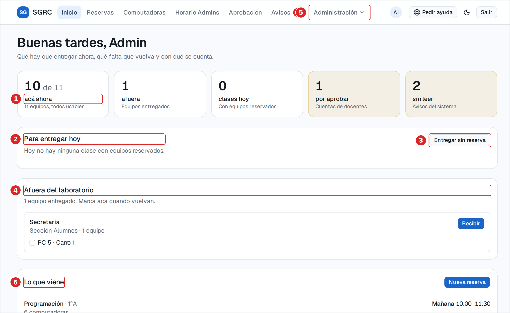
La pantalla de inicio del Admin, con las zonas señaladas.
Para entregar ahora. Las clases que están empezando y todavía no
retiraron sus computadoras. Es lo primero que mirás cuando llega un docente.
Afuera del laboratorio. Lo que está fuera y todavía no volvió, con
quién lo tiene. Cuando devuelven, se marca acá.
En el laboratorio ahora. Cuántas máquinas hay disponibles en este
momento.
Entregar sin reserva. Para cuando alguien pide algo en el momento, sin
haber reservado.
Administración. El menú con todo lo demás.
Lo que viene. Las próximas clases con equipos reservados.
Los cuatro números del medio
Debajo de las tarjetas hay cuatro contadores: clases de hoy, equipos afuera,
cuentas por aprobar y avisos sin leer. Si alguno está en cero, no hay nada
pendiente de ese tipo. El de cuentas por aprobar es el que más conviene mirar:
detrás de cada una hay un docente que no puede trabajar.
3Dónde está cada cosa
En la barra de arriba, el menú Administración abre todo lo que es tuyo.
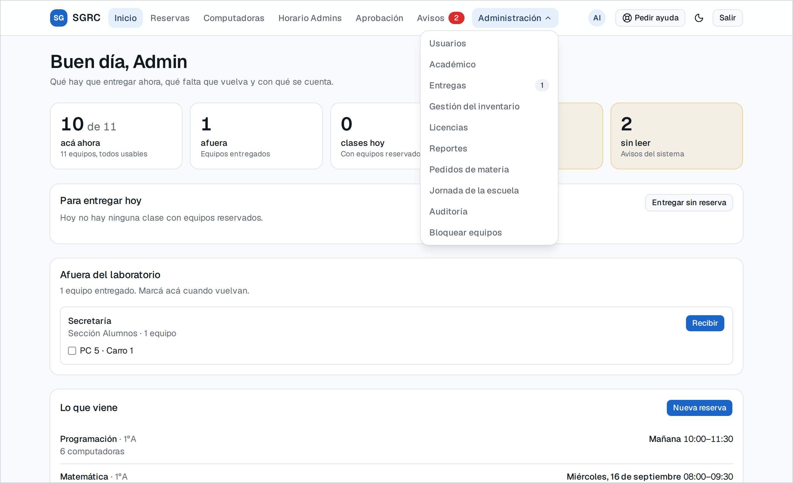
El menú Administración, desplegado.
Usuarios — todas las cuentas: contraseñas, roles, bajas.
Académico — ciclos, cursos, materias y qué docente da cada una.
Entregas — entregar y recibir computadoras.
Gestión del inventario — carros y equipos: alta, edición, estado.
Licencias — qué software vence y cuándo.
Reportes — cuánto se usó cada máquina y cada docente.
Pedidos de materia — docentes que piden sumarse a una materia.
Jornada de la escuela — en qué días y horarios se puede reservar.
Bloquear equipos — tomar máquinas para una evaluación o una jornada.
Afuera del menú, en la misma barra, están Aprobación (las cuentas nuevas)
y Avisos, que es también donde se contestan los pedidos de ayuda.
4Aprobar las cuentas nuevas
Cuando alguien se registra, su cuenta queda esperando. Hasta que la apruebes,
no puede entrar.
Tocá Aprobación en la barra de arriba.
Mirá quién es y con qué email se registró. Si no lo reconocés,
preguntá antes de aprobar.
Tocá Aprobar, o Rechazar
si no corresponde.
Anotalo en su materia: eso se hace en Académico (capítulo 5). Sin
materia asignada, el docente entra pero no puede reservar.
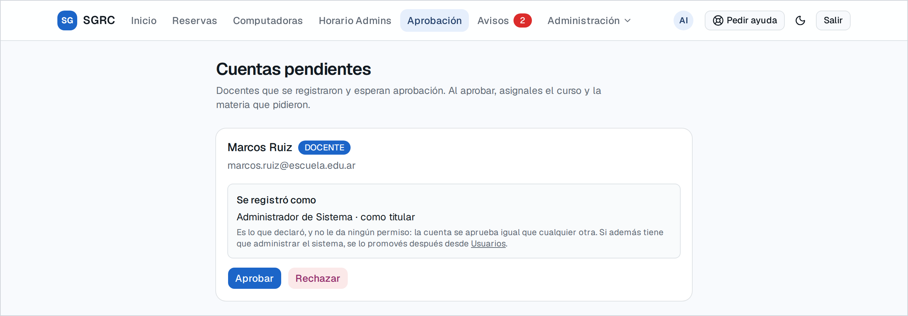
Una cuenta esperando aprobación.
Al registrarse te dejaron una pista
En el formulario de registro, la persona dijo con qué cargo se registra y
si es titular o suplente. Si es docente, además pudo indicar qué curso y
qué materia va a dictar. Todo eso llega junto con el pedido y es lo que mirás
para asignarlo correctamente.
«Administrador de Sistema» en la ficha no da permisos
Alguien puede haberse registrado como Administrador de Sistema —auxiliar
informático, administrador de red y demás cargos docentes que administran el
laboratorio sin dar clase—. Eso es solo lo que declaró: la cuenta se
aprueba igual que cualquier otra y queda como docente. Si además tiene que
administrar el sistema, se lo das vos después, desde Usuarios (capítulo
7), con Promover a admin. Aprobar nunca convierte a
nadie en Admin.
No dejes cuentas esperando
Una cuenta sin aprobar es un docente que no puede reservar. Por eso este aviso
llega por correo a todos los Admin y viene encendido de fábrica.
5Ciclos, cursos y materias
Es la base de todo. Un ciclo lectivo (el año) contiene cursos
(1°A, 2°B), cada curso tiene sus materias, y los docentes reservan
para una materia. Si esto no está cargado, nadie puede reservar nada.
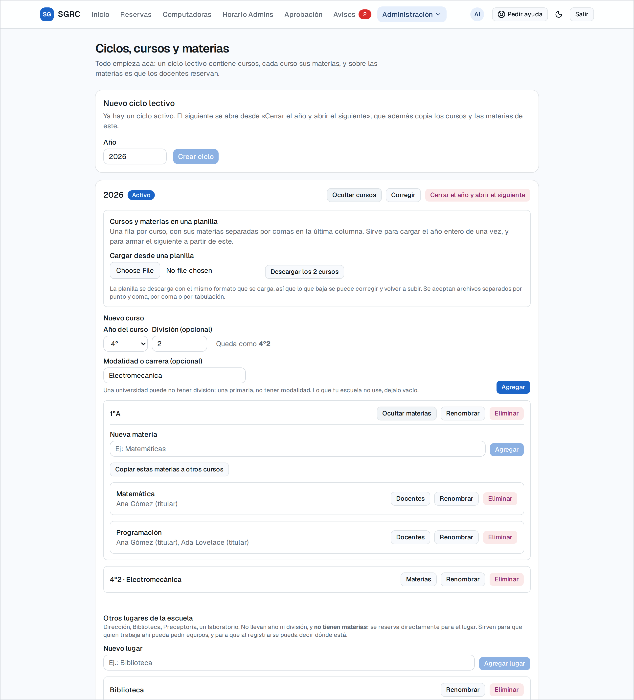
El ciclo activo, con sus cursos y materias.
Empezar el año
En Académico, escribí el año en Nuevo ciclo lectivo y tocá
Crear ciclo.
Abrí el ciclo con Cursos y agregá cada curso:
elegís el año (1° a 6°) y la división (A, B, C…). Queda como «1°A».
En cada curso, tocá Materias y agregá las materias
que se dictan ahí.
En cada materia, asigná los docentes que la dan, indicando si son
titular o suplente.
Solo puede haber un ciclo activo
Para abrir el año siguiente hay que cerrar el actual primero. Es la
operación más delicada del sistema —borra las reservas del año— y tiene su
propio capítulo, el 6: leelo antes de tocar ese botón.
Si un docente pide una materia
No hace falta que lo cargues a mano: puede pedirla desde su perfil y vos la
resolvés en Pedidos de materia (capítulo 14).
6Cerrar el año y abrir el siguiente
Se hace una vez al año, cuando el ciclo lectivo terminó. Es la única
operación del sistema que borra información para siempre, así que este
capítulo cuenta exactamente qué se lleva puesto y qué no. Leelo entero antes de
hacerlo: no hay botón de deshacer.
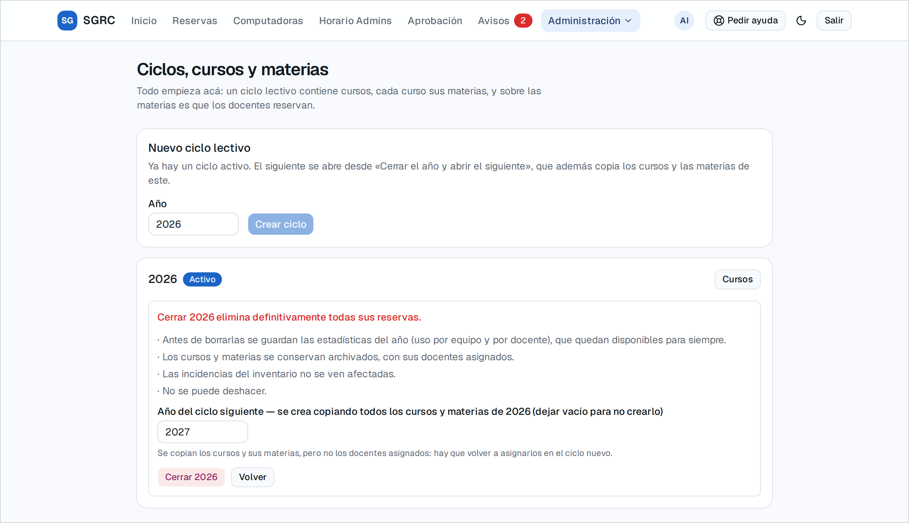
El sistema te dice qué va a pasar antes de que confirmes.
Cerrar el año borra todas las reservas de ese año
Todas: las que ya pasaron y las que estaban por venir. Por eso se hace
cuando el año terminó y no antes — si lo hacés en octubre, las clases
reservadas para noviembre desaparecen sin avisarle a nadie.
Qué se guarda y qué se pierde
Se guardan las estadísticas del año, antes de borrar nada: cuánto usó
cada equipo y cuántas horas reservó cada docente. Quedan para siempre en
Reportes, en «Histórico por año».
Se conservan los cursos y las materias, archivados, con sus docentes
asignados. No hay que volver a escribirlos para consultarlos.
No se tocan las incidencias del inventario: lo que se rompió y cuándo
sigue estando.
Se pierde el detalle reserva por reserva: qué día, a qué hora y qué
máquina usó cada uno. Del año viejo van a quedar los totales, no la agenda.
Si querés guardar el detalle, bajalo antes
En Reportes, con el ciclo viejo elegido, tocá
Descargar CSV en cada bloque. Ese archivo se abre con
Excel y es lo único que va a conservar el detalle fino. Después de cerrar el año
ya no se puede sacar.
Cómo se hace
Entrá a Administración → Académico.
En la tarjeta del ciclo activo, tocá Cerrar el año.
Todavía no pasó nada: se abre un recuadro que explica qué va a pasar.
Leé el recuadro. Si te arrepentís, Volver cierra
el recuadro y no cambia nada.
Mirá el campo «Crear el ciclo siguiente copiando cursos y materias»:
viene con el año que viene ya escrito. Si lo dejás así, el sistema crea el
ciclo nuevo con los mismos cursos y las mismas materias, y te ahorra cargar
todo de nuevo. Si lo borrás, no se crea ningún ciclo y lo hacés a mano
después.
Tocá el botón rojo con el año —Cerrar 2026— para
confirmar. Ahí sí, se cierra.
A los docentes hay que volver a asignarlos
La copia trae los cursos y las materias, pero no quién las da. En el
ciclo nuevo, cada materia arranca sin docentes: entrá a
Académico → Cursos → Materias y asignalos como en el capítulo 5. Hasta
que lo hagas, esos docentes no van a poder reservar.
Cómo saber que salió bien
El ciclo viejo queda con la etiqueta Archivado y el nuevo con
Activo. En Reportes, abajo de todo, aparece el histórico del año
que cerraste.
7Los usuarios
En Administración → Usuarios están todas las cuentas, con un filtro por
estado. Arriba a la derecha, Crear otro Admin da de
alta una cuenta de administración directamente, sin que la persona tenga que
registrarse y esperar aprobación.
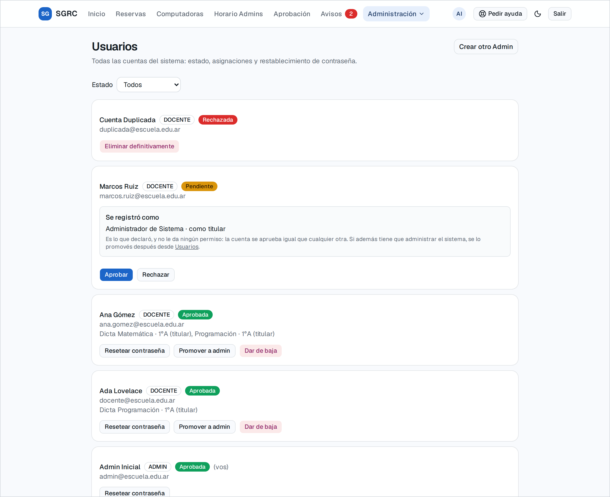
Cada cuenta, con su estado y lo que se puede hacer con ella.
Restablecer una contraseña
Si un docente no puede entrar y el correo de recuperación no le llega, tocá
Resetear contraseña en su fila. El sistema le genera
una nueva y él la cambia al entrar.
Convertir a alguien en Admin
Promover a admin le da a esa persona todo lo que
describe esta guía. Hacelo solo con quien va a atender el laboratorio: un Admin
puede cancelar reservas ajenas y dar de baja equipos.
Es acá donde se resuelve el caso de quien se registró como Administrador de
Sistema (capítulo 4): primero se aprueba la cuenta como cualquier otra, y
después, si corresponde, se la promueve desde esta pantalla. Son dos decisiones
distintas y las tomás vos las dos.
Quitarle los permisos a un Admin
Es lo contrario de promover, y aparece solo en las cuentas que ya son Admin:
Quitar permisos de admin. La persona sigue teniendo su
cuenta y sus materias, y vuelve a ver el sistema como cualquier docente.
Sirve cuando alguien deja de atender el laboratorio pero sigue dando clase. No
hace falta darlo de baja ni crearle otra cuenta: sus reservas y su historial
quedan intactos.
Dar de baja una cuenta
Para alguien que ya no trabaja en la escuela. La cuenta deja de poder entrar,
pero no desaparece: lo que reservó y entregó sigue figurando en el
historial, que es justamente para lo que sirve.
La baja no se puede deshacer
No hay forma de reactivar una cuenta dada de baja. Y si sus materias quedan sin
ningún otro docente, sus reservas futuras se cancelan. El sistema te lo
dice antes de confirmar.
Borrar una cuenta del todo
Eliminar definitivamente aparece únicamente en las
cuentas rechazadas o dadas de baja, y hace lo que dice: la borra y
libera el email para que esa persona pueda registrarse de nuevo.
Existe sobre todo para un caso: rechazaste una cuenta por error. Una
cuenta rechazada no se puede aprobar después, así que sin esto ese email queda
tomado para siempre y la persona no puede volver a registrarse. Eliminala y que
se registre otra vez.
Esto sí borra a la persona
Sus reservas e incidencias se conservan, pero pierden el nombre: quedan
sin dueño en el historial. Si lo que querés es que alguien deje de entrar,
dar de baja alcanza y conserva todo. Eliminar es para liberar el email.
Tu propia cuenta
Sobre vos mismo el sistema no te ofrece ni quitarte los permisos ni darte de
baja: en tu fila solo vas a ver Resetear contraseña.
Es a propósito — evita que la escuela se quede sin ningún Admin por un clic, y
que te quedes afuera de esta pantalla sin poder volver.
8El inventario
En Administración → Gestión del inventario se cargan los carros y las
computadoras, y se cambia su estado.
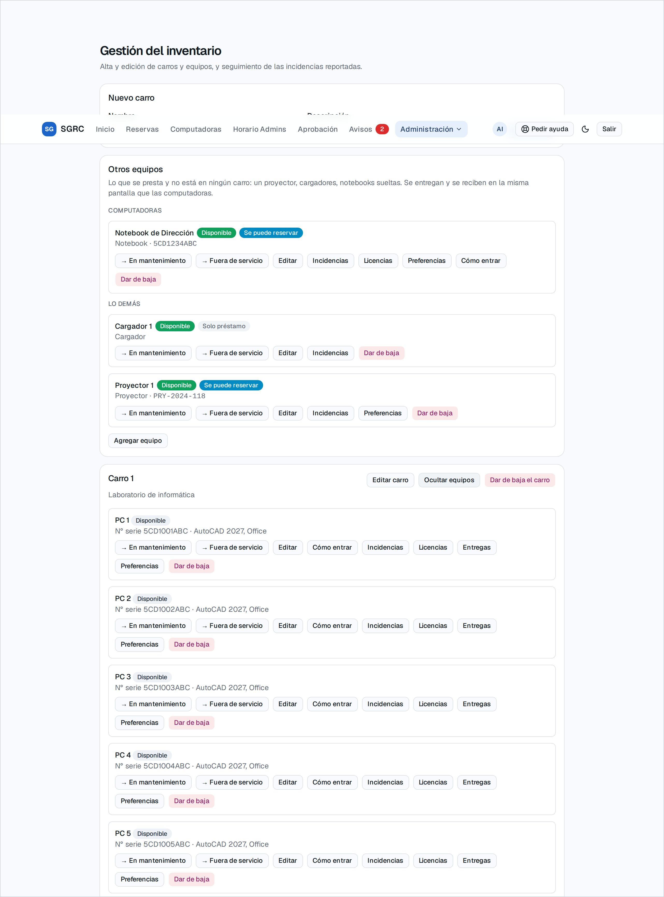
Cada equipo, con su número de serie, sus programas y sus acciones.
Cargar un carro y sus computadoras
En Nuevo carro, poné el nombre (por ejemplo, «Carro 1») y una
descripción, y tocá Crear carro.
Abrilo con Gestionar equipos.
Agregá cada computadora con su número dentro del carro, su
número de serie y los programas que tiene instalados.
Lo que no está en un carro: «Otros equipos»
El proyector, los cargadores o una notebook suelta se cargan en
Otros equipos, en la misma pantalla, con
Agregar equipo. Se entregan y se reciben igual que
las computadoras. Se les pide:
¿Qué es? — Proyector, Cargador, Notebook… lo escribís vos, y el
sistema te sugiere los que ya cargaste para que no convivan «Proyector» y
«PROYECTOR».
¿Cómo lo llaman? — es lo único que lo distingue de otro igual. Si
hay más de uno, numeralos: Cargador 1, Cargador 2.
Número de serie — si tiene. Un proyector trae, y es lo que
sirve para reclamarlo si se pierde; un cargador no trae ninguno. Dejarlo
vacío es normal: es mejor que inventar un valor.
Se puede reservar con anticipación — marcalo para un proyector, que
alguien puede querer para una clase del jueves. Dejalo sin marcar para un
cargador: se presta en el momento, y aparecería como ruido cada vez que un
docente va a reservar.
Los tres estados de una computadora
Disponible — se puede reservar y entregar.
En mantenimiento — está siendo reparada. Nadie la puede reservar.
Fuera de servicio — no anda y no se sabe cuándo va a andar.
El estado se cambia con las flechas → En mantenimiento
y → Fuera de servicio de cada equipo.
Un aviso de falla no cambia el estado solo
Cuando un docente avisa que una máquina no anda, queda cargada la incidencia,
pero la computadora sigue disponible hasta que vos la muevas. Es a
propósito: quien decide si se puede seguir usando sos vos. Si la falla es real,
pasala a mantenimiento para que nadie la reserve.
Las otras acciones de cada equipo
Cómo entrar — con qué usuario se abre esa máquina y cuál es su
contraseña. Tiene su propio capítulo, el 9.
Incidencias — las fallas que reportaron sobre esa máquina.
Licencias — el software con vencimiento que tiene instalado.
Entregas — el historial de quién se la llevó y cuándo volvió.
Preferencias — para marcar que esa máquina es la preferida de cierta
materia; al reservar para esa materia aparece primera en la lista.
Dar de baja — para una máquina que ya no existe. No borra su historial.
El calendario de una computadora
Entrá a Computadoras en la barra de arriba, abrí el carro con
Ver equipos y tocá el
Ver calendario de la máquina que te interese: se abre
su semana completa, hora por hora. Es la forma más rápida de contestar «¿esta PC
está libre el jueves a las 10?» sin abrir ninguna reserva.
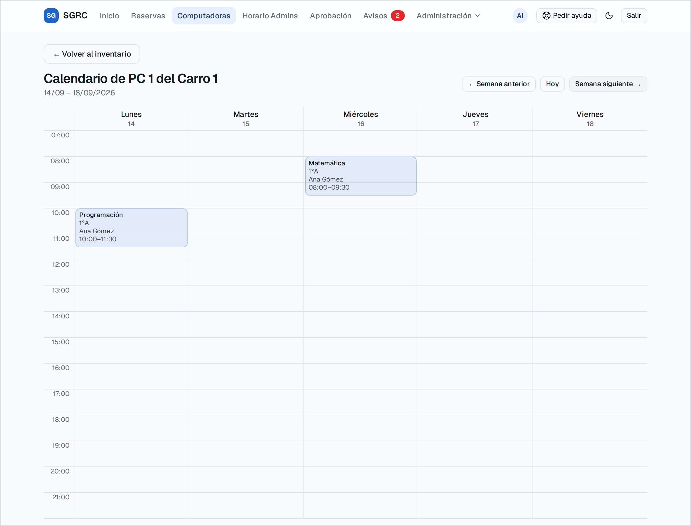
Una semana de una sola máquina: en azul las clases, en rojo los bloqueos.
En azul, las reservas de clase, con la materia y el docente.
En rojo, los bloqueos que hiciste vos o cualquier Admin, con el
motivo que se escribió al bloquear (capítulo 12).
Los huecos en blanco están libres.
Con ← Semana anterior y
Semana siguiente → te movés, y
Hoy te trae de vuelta. Los docentes ven exactamente
esta misma pantalla.
9Con qué cuenta se entra a cada equipo
Una notebook no se abre sola. Ese dato —con qué usuario se entra y cuál es la
contraseña— suele vivir en la cabeza de una persona y en un papel pegado
adentro del carro. Acá se anota una vez y lo consulta cualquiera que lo
necesite, desde el teléfono, parado frente a la máquina.
Entrá a Administración → Gestión del inventario y abrí el carro con
Gestionar equipos.
En la fila de la máquina, tocá Cómo entrar.
Tocá Agregar cuenta y completá lo que sepas.
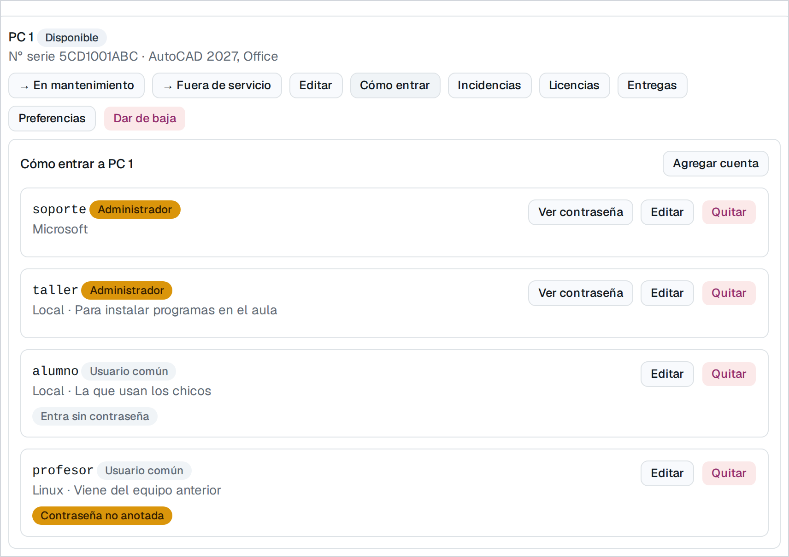
Las cuentas de una máquina, con sus botones para editar y quitar.
También está en «Computadoras»
El mismo panel se abre desde Computadoras, en la barra de arriba: ahí es
donde lo consultan los docentes. La diferencia es que desde
Gestión del inventario lo tenés al lado del resto de lo que se carga de
un equipo, sin cambiar de pantalla en medio de un alta.
Qué se anota de cada cuenta
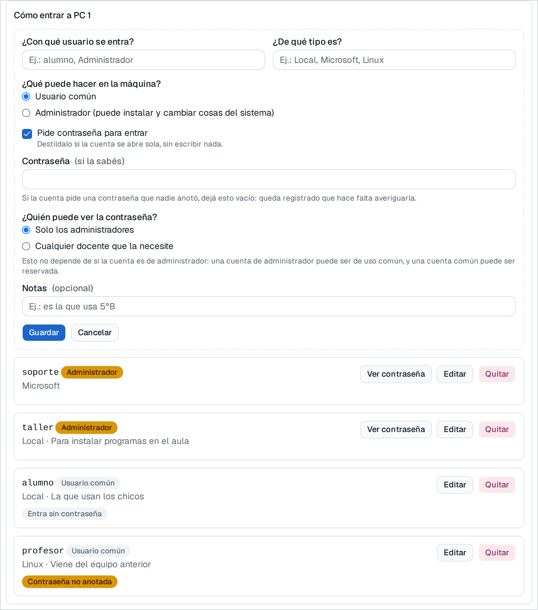
Lo único obligatorio es con qué usuario se entra.
¿Con qué usuario se entra? — es lo único obligatorio: sin eso la
ficha no dice nada que sirva frente a la máquina. Escribilo tal cual hay que
tipearlo.
¿De qué tipo es? — Local, Microsoft, Linux, Google… lo escribís vos,
y el sistema sugiere los que ya usaste. No es una lista cerrada porque no
todas las escuelas tienen las mismas.
¿Qué puede hacer en la máquina? — usuario común o administrador.
Pide contraseña para entrar — destildalo si la cuenta se abre sola.
Contraseña — solo si la sabés (ver más abajo).
¿Quién puede ver la contraseña? — solo los administradores, o
cualquier docente que la necesite.
Notas — opcional: «es la que usa 5°B», «no cerrar la sesión».
Quién ve la contraseña no depende de si la cuenta es de administrador
Son dos preguntas distintas y el sistema no deduce una de la otra, porque se
equivocaría en los dos sentidos. La cuenta de administrador de la máquina del
taller la usa todo el mundo para instalar cosas: esa conviene marcarla
pública. Y una cuenta común puede tener adentro cosas de administración:
esa va solo administradores. Lo que la marca oculta es la
contraseña: la cuenta y su privilegio los ve todo el mundo igual, porque
esconderlos haría que el inventario mienta por omisión.
Tres situaciones con la contraseña, no dos
La máquina no pide contraseña. Destildá «Pide contraseña para
entrar» y listo: en la ficha se lee «Entra sin contraseña».
Pide una y la sabés. Tildala y escribila. Queda guardada
cifrada, y se muestra de a una cuando alguien la pide.
Pide una y nadie la sabe. Tildala y dejá el campo vacío. La ficha
va a decir «Contraseña no anotada», que no es lo mismo que «entra sin
contraseña»: es un pendiente, y así queda registrado que hay que
averiguarla.
Las contraseñas no se muestran todas juntas
Ni siquiera a vos: en la lista no aparece ninguna. Se piden de a una con
Ver contraseña, y cada vez que alguien lo hace
queda registrado quién fue y cuándo. Si viajaran en la lista, abrir la ficha
de una máquina sería mostrar todas sus contraseñas de una vez.
Cuándo aparece el botón «Cómo entrar»
Vos lo ves siempre, en todos los equipos: es la única forma de anotar la
primera cuenta. Un docente lo ve solo en los equipos que ya tienen algo
anotado. Por eso un cargador —que no tiene con qué entrar— no le muestra un
botón que no lleva a ningún lado.
Si el sistema no te deja guardar la contraseña
Si al guardar aparece un aviso diciendo que este sistema no puede guardar
contraseñas de equipos, es que a la instalación le falta una configuración
(CUENTAS_SECRET, en el archivo .env del servidor). La
cuenta se anota igual —usuario, tipo y privilegio—; lo único que no se guarda
es la contraseña. Pasale el dato a quien administra el servidor: está en la
guía de operación.
Cuando algo cambia
Editar — para corregir el usuario, el tipo, el privilegio o quién
puede ver la contraseña. Si dejás el campo de la contraseña vacío, la que
estaba se conserva.
Para borrar solo la contraseña sin borrar la cuenta —cambió y todavía
no sabés la nueva— editala, borrá el contenido del campo y guardá: pasa a
«Contraseña no anotada».
Quitar — para una cuenta que ya no existe en la máquina.
10Entregar y recibir
Es el trabajo de todos los días y reemplaza al registro en papel. Está en
Administración → Entregas, y lo urgente también aparece en tu pantalla de
inicio.
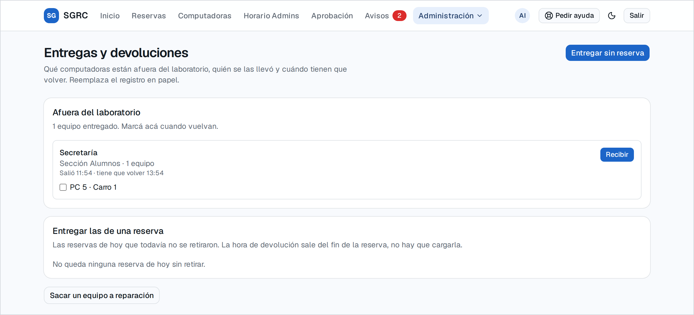
Arriba, lo que está afuera; abajo, las reservas de hoy sin retirar.
Entregar las computadoras de una reserva
Buscá la clase en Entregar las de una reserva —o en «Para entregar
ahora», en tu inicio—.
Tildá qué computadoras se lleva. Si se lleva menos de las que reservó, tildá
solo esas.
Confirmá la entrega.
La hora de devolución sale sola
Para una reserva, la hora en que tienen que volver es la del fin de la clase. No
hay que cargarla.
Entregar sin reserva
Para cuando alguien pide algo en el momento: una computadora para un trámite, el
proyector para una charla. La persona no necesita tener cuenta en el
sistema.
Tocá Entregar sin reserva.
Escribí a quién se la entregás. Alcanza con el nombre y, si sirve, de
dónde es: «Secretaría», «Marta (preceptoría)».
Si querés, poné para qué y cuándo la devuelve. Si no sabés
cuándo vuelve, dejalo vacío: en ese caso no se le va a reclamar.
Tildá los equipos y confirmá.
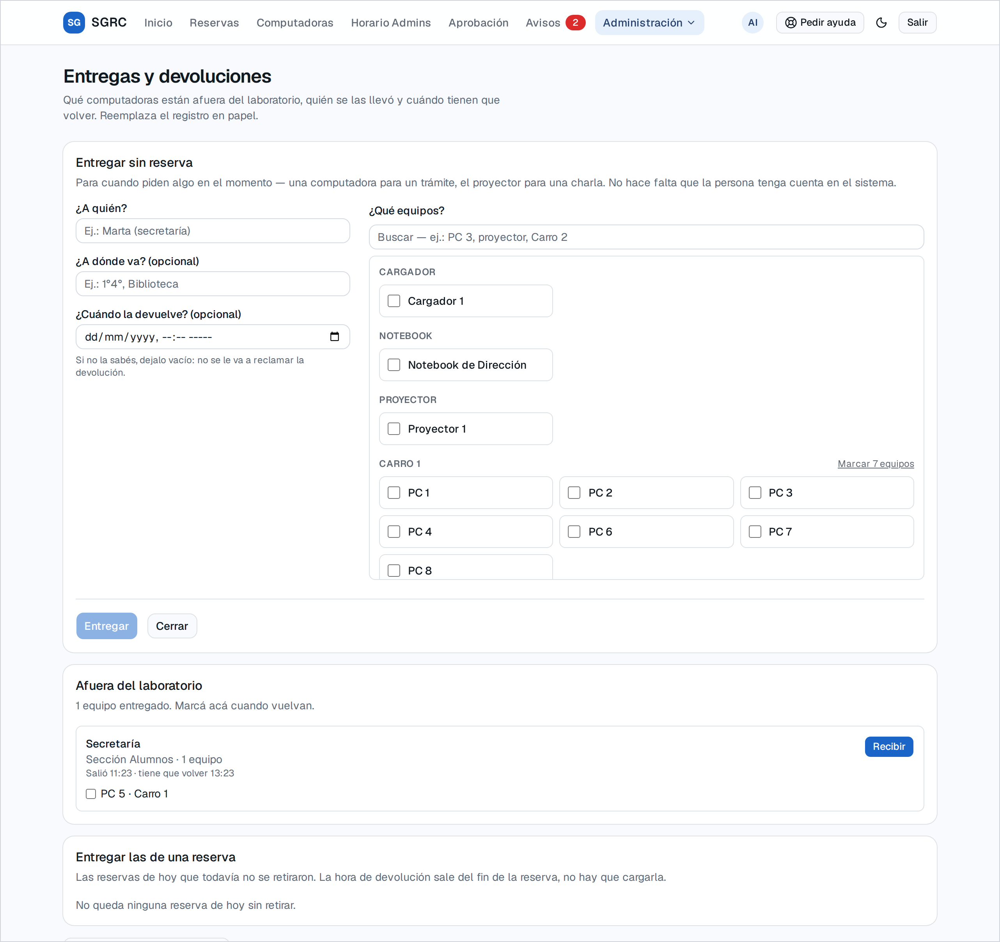
Con el nombre alcanza; lo demás es opcional.
Recibir lo que vuelve
En Afuera del laboratorio, buscá el equipo que te están devolviendo.
Tocá Recibir. Si vuelven varios juntos, tildalos y
recibilos de una vez.
Si algo no vuelve a horario
El sistema avisa solo: al docente le llega un recordatorio y a los Admin un aviso
de devolución demorada. Una hora después de que cierra la escuela, además, sale
un resumen de lo que quedó afuera — una sola vez, no todos los días.
Lo que sí no se va nunca es el número al lado de «Entregas» en el menú:
cuenta las computadoras que están fuera del laboratorio y no baja hasta que
alguien las recibe. Si una máquina no vuelve más, dala de baja del inventario y
dejá dicho ahí qué pasó. Todo esto sirve si la pantalla refleja la realidad:
marcá las devoluciones en el momento, no al final del día.
11Licencias de software
Sirve para no enterarte de que una licencia venció el día que un docente no puede
dar su clase.
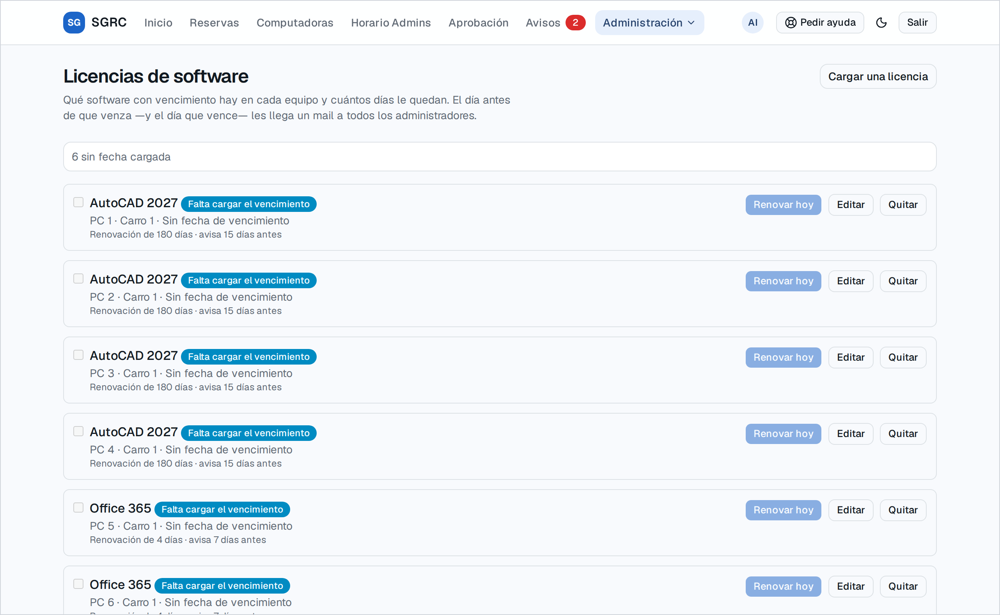
Cada máquina lleva su propio contador. Primero, las que están por vencer.
Cargar una licencia
Tocá Cargar una licencia.
Escribí el software (por ejemplo, «AutoCAD 2027»).
Poné cuántos días dura cada renovación y con cuántos días de
anticipación querés que avise.
Tildá en qué equipos está instalado. Podés marcarlos todos de una vez.
Decí cuándo vence. Hay tres formas: le quedan N días, se renovó el…, o
vence el… Si no lo sabés, elegí «todavía no sé».
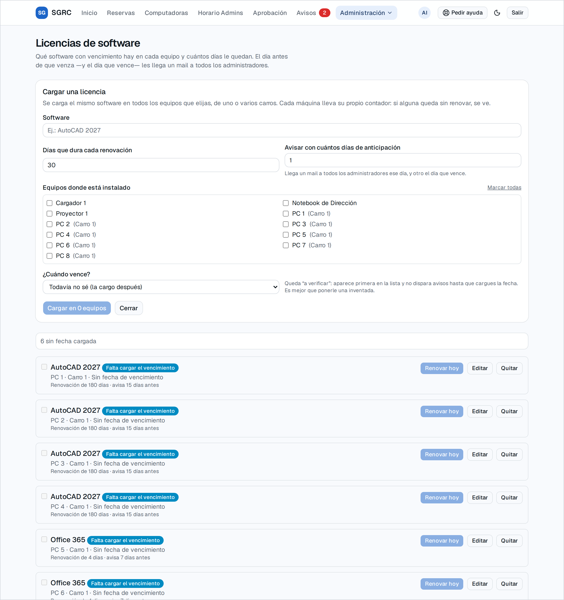
Se carga el mismo software en varios equipos de una sola vez.
«Todavía no sé» es una respuesta válida
Una licencia sin fecha aparece primera en la lista, marcada como a verificar, y no
dispara avisos. Es mejor que inventar una fecha: la fecha inventada avisa cuando
no corresponde y calla cuando importa.
Renovar
Cuando renovás una licencia de verdad, tocá Renovar hoy
en esa máquina: el contador arranca de nuevo. Si renovaste varias, se pueden
renovar juntas.
Los avisos llegan a todos los Admin
El día que corresponde según la anticipación que cargaste, y otra vez el día del
vencimiento, les llega un correo a todos los administradores.
12Bloquear equipos
Para cuando el laboratorio necesita las máquinas para otra cosa: una evaluación,
una jornada, una capacitación, un mantenimiento.
Entrá a Administración → Bloquear equipos.
Elegí la fecha y el horario.
Escribí por qué se bloquean. Esto es importante: es exactamente lo que
van a leer los docentes en el aviso de cancelación.
Tildá los equipos. El sistema te marca cuáles ya tienen reserva en ese
horario.
Tocá Revisar bloqueo. Todavía no bloqueaste
nada: primero te muestra qué clases se van a cancelar y de qué docentes,
para que lo veas antes de confirmar.
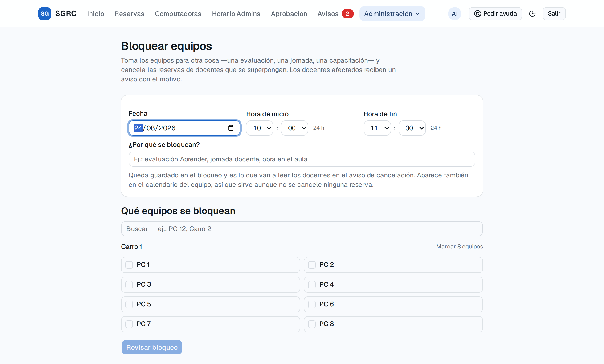
Antes de bloquear, se ve qué máquinas tienen reserva en esa franja.
Bloquear cancela clases de otros
Las reservas que se pisan con el bloqueo se cancelan, y a cada docente le llega un
aviso con el motivo que escribiste. Escribilo pensando en que lo lee alguien que
se acaba de quedar sin computadoras para su clase.
Se cancelan máquinas, no la clase entera
Si bloqueás dos de las seis computadoras de una clase, las otras cuatro le quedan
reservadas al docente, y el aviso se lo dice.
Para levantar un bloqueo antes de tiempo, buscalo en Reservas y usá
Levantar bloqueo: los equipos vuelven a estar
disponibles.
13La jornada de la escuela
Son los días y las horas en que la escuela está abierta. Las reservas fuera de ese
horario se rechazan solas.
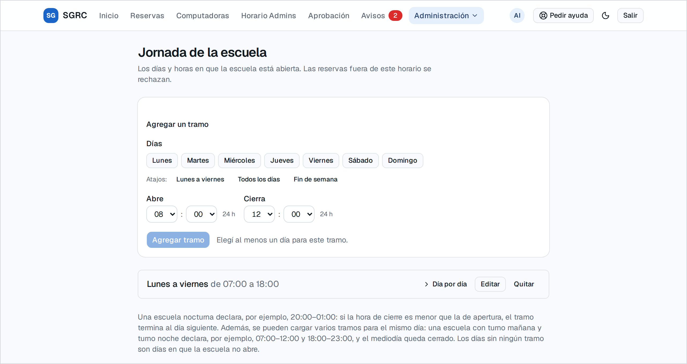
Se carga por tramos: qué días, desde qué hora y hasta cuál.
Entrá a Administración → Jornada de la escuela.
Tildá los días del tramo. Hay atajos: «Lunes a viernes», «Todos los
días», «Fin de semana».
Poné a qué hora abre y a qué hora cierra.
Tocá Agregar tramo. Repetí para cada tramo distinto.
Dos casos que conviene conocerTurno mañana y turno noche: cargá dos tramos para el mismo día —por
ejemplo 07:00–12:00 y 18:00–23:00— y el mediodía queda cerrado.
Escuela nocturna: si la hora de cierre es menor que la de apertura
—20:00–01:00—, el tramo termina al día siguiente.
Mientras no cargues nada, no hay límite
Sin horario declarado se puede reservar cualquier día y a cualquier hora. Por eso
el sistema te lo va a pedir cada vez que entres, hasta que lo cargues. Podés
postergarlo y trabajar igual —sirve para probar el sistema sin inventar un
horario que todavía no sabés— pero el pedido vuelve en la próxima entrada.
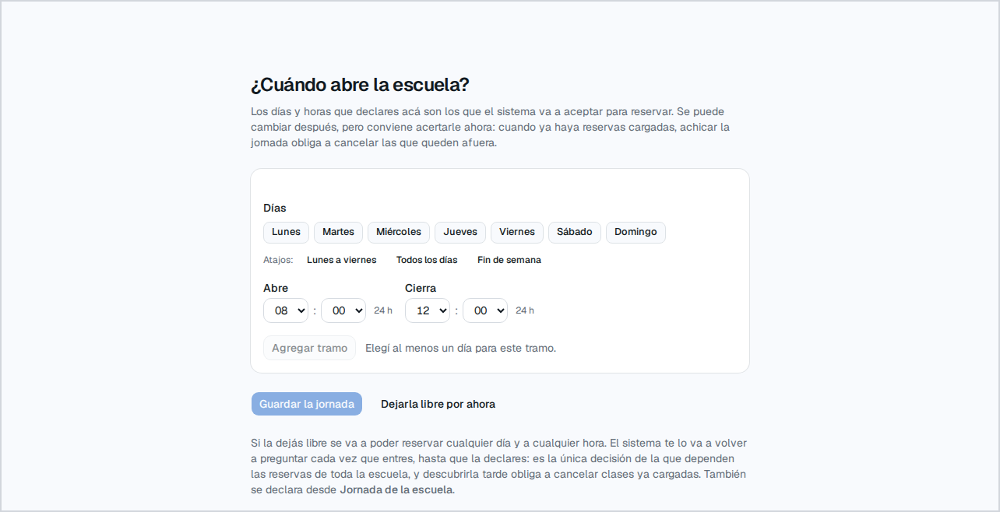
Lo primero que ves si la escuela todavía no tiene horario
cargado. Se puede declarar acá mismo o dejarlo para después.
Si cambiás el horario y ya hay clases reservadas
El sistema no cancela nada por su cuenta. Antes de guardar te muestra
cuántas clases quedan afuera y de cuántos docentes, con la lista, y
recién ahí decidís.
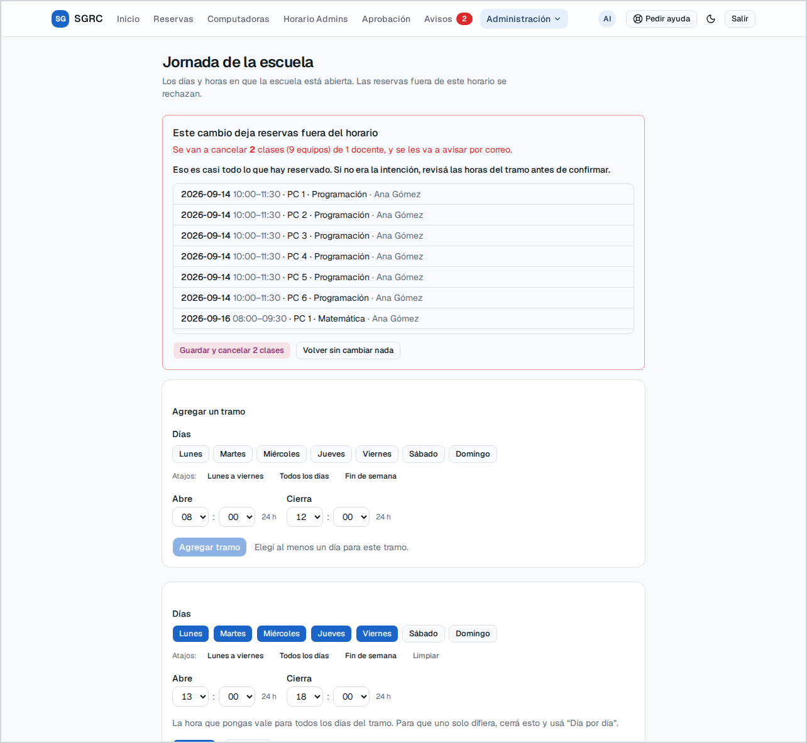
Se cuenta en clases; los equipos van al lado porque una clase
puede tener varias computadoras.
Ampliar el horario no afecta a nadie y no te pregunta nada.
La clase entra entera o no entra. Si achicás a 13:00–15:00, una clase
de 13:00 a 16:00 se cancela completa: no se le recorta la última hora.
La clase que está en curso no se toca. Termina.
A cada docente le llega un correo explicando por qué.
Si dice que se cancela casi todo, frená
Un cambio real de horario rara vez se lleva puesta la escuela entera. Cuando el
cartel avisa que es casi todo lo reservado, revisá las horas del tramo antes de
confirmar: casi siempre es un número mal cargado.
Ojo con las computadoras ya entregadas
Si alguna de las clases que se cancelan ya tiene sus máquinas entregadas,
el sistema te lo avisa con el nombre de quien las tiene. El préstamo no se
cancela —la computadora está afuera y se recibe como siempre— pero conviene
avisarle a esa persona a mano, antes de que se entere por el correo.
14Pedidos para dictar una materia
Un docente puede pedir, desde su perfil, que lo anoten en una materia. Acá se
resuelven.
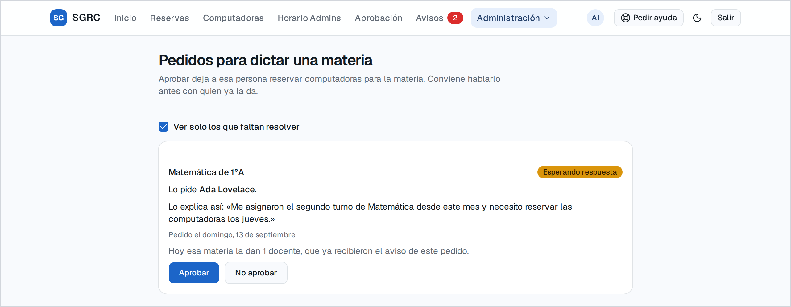
Cada pedido trae el motivo que escribió el docente.
Entrá a Administración → Pedidos de materia.
Leé el motivo. Si la materia ya la da otro docente, a esa persona también le
llegó el aviso.
Hablalo antes de aprobar, si hace falta. El sistema no reemplaza esa
conversación.
Aprobalo o rechazalo. Al aprobar, esa persona queda habilitada a reservar para
esa materia.
Si la materia no existe todavía
El docente puede pedir una materia que no está cargada, describiéndola. En ese
caso, primero creala en Académico y después resolvé el pedido.
15Pedidos de ayuda y mensajes
Es el buzón por donde los docentes piden ayuda, avisan que algo no anda o
proponen mejoras. Vive dentro de Avisos.
Entrá a Avisos.
En Pedidos de ayuda, tocá
Ver conversaciones. Viene tildado «Ver solo lo que
falta contestar».
Abrí una conversación con Ver. Vas a leer todo lo
que se dijo, en orden.
Escribí tu respuesta abajo y tocá Responder.
Cuando el tema esté terminado, tocá
Dar por resuelta.
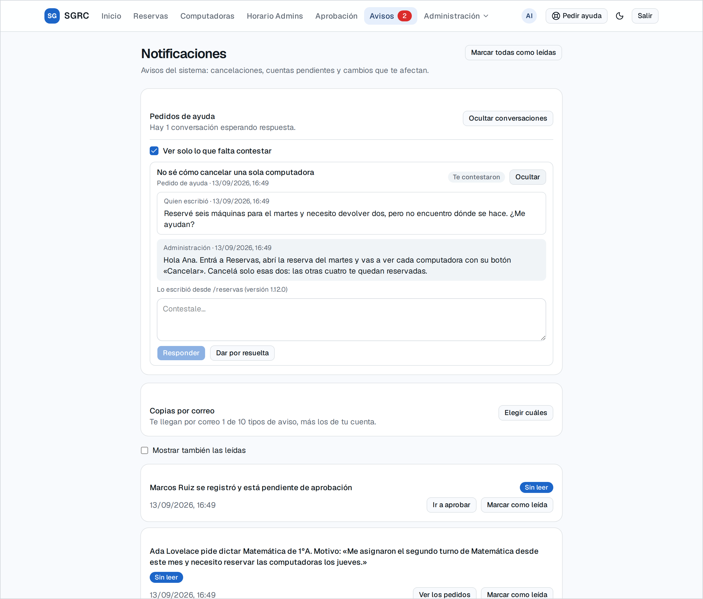
La conversación completa: lo que escribió el docente y lo que
contestaron.
Contestar no cierra el tema
Podés contestar las veces que haga falta; recién se cierra cuando alguien la da
por resuelta. Y si el docente vuelve a escribir sobre una conversación resuelta,
se reabre y vuelve a aparecer en tu lista. Nada se pierde de vista.
Estos correos no se pueden apagar
Los pedidos de ayuda le llegan por mail a todos los Admin siempre, y la respuesta
le llega al docente siempre. Es el único canal por el que alguien pide auxilio:
si se pudiera apagar, dejaría de serlo.
Cada conversación te dice desde qué pantalla la escribieron y con qué versión del
sistema. Cuando alguien reporta algo raro, ese dato suele ser la mitad de la
respuesta.
16Reportes
Para responder preguntas que en papel no se podían responder: cuánto se usa cada
máquina, quién reserva, qué se rompe.
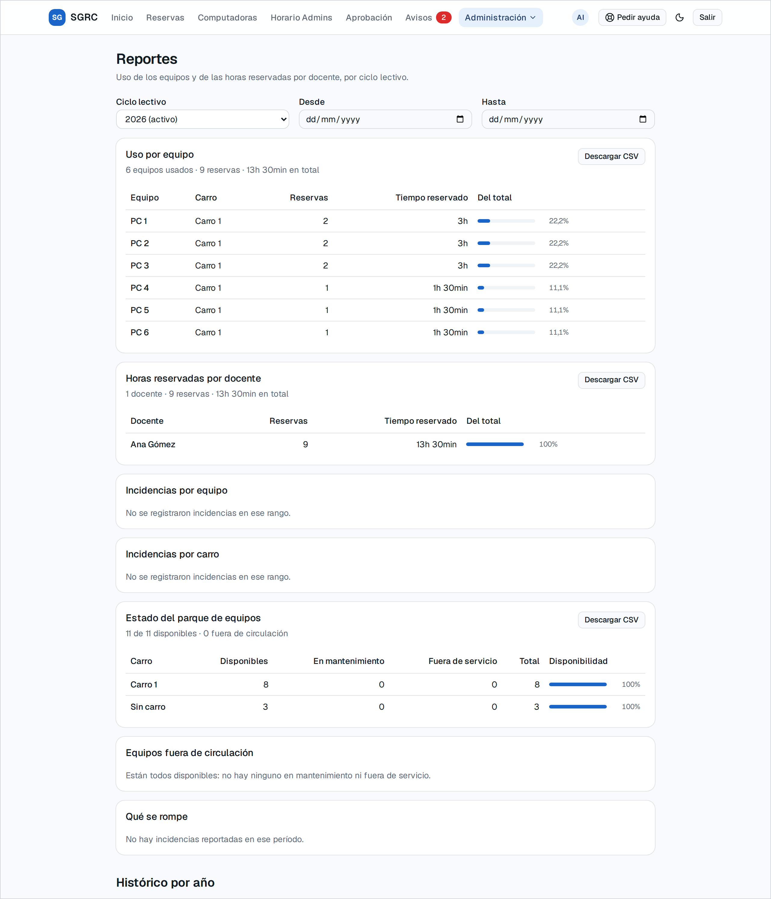
Todos los reportes en una sola pantalla, filtrados por ciclo y por fechas.
Uso por equipo — cuántas reservas y cuántas horas tuvo cada máquina.
Sirve para repartir el desgaste y para justificar una compra.
Horas por docente — quién está usando el laboratorio.
Incidencias por equipo y por carro — dónde se concentran las fallas.
Estado del parque — cuántas disponibles, en mantenimiento y fuera de
servicio.
Qué se rompe — las fallas agrupadas por tipo.
Histórico por año — se genera solo al cerrar un ciclo lectivo.
Todo se puede bajar
Cada reporte tiene Descargar CSV: se abre con Excel o
con Google Sheets, para armar un informe o presentarlo en una reunión.
17Tus horarios de atención
Los docentes tienen una pantalla que les dice en qué días y horarios está cada
Admin. La cargás vos, para vos.
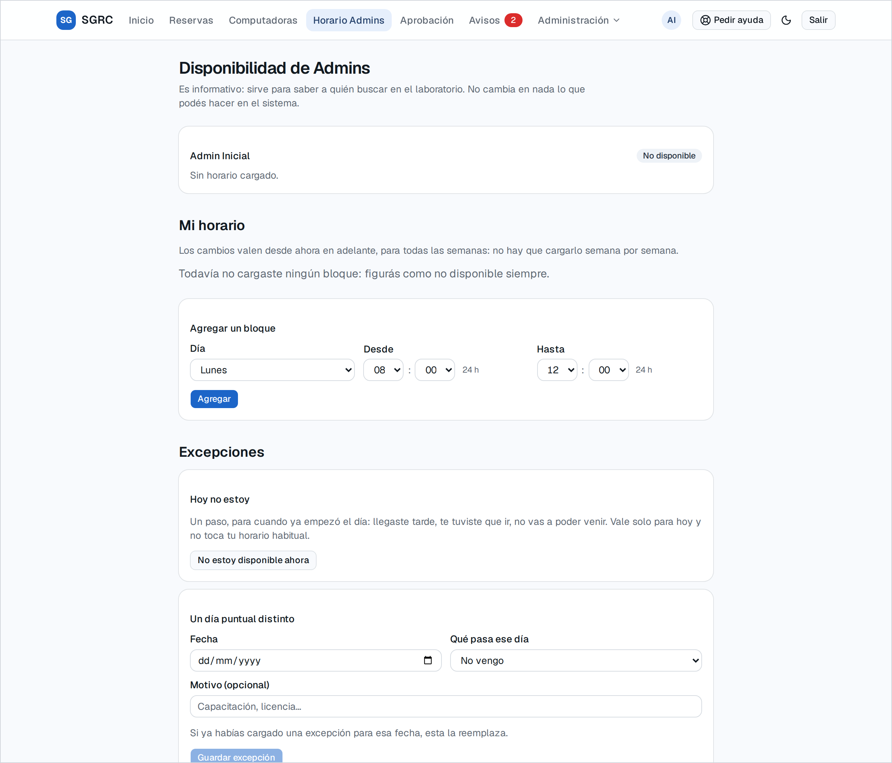
Tu horario, cargado por vos; los docentes lo ven en «Horario Admins».
Entrá a Horario Admins, en la barra de arriba.
Cargá tus tramos: qué días y de qué hora a qué hora atendés.
Si un día puntual no vas a estar, cargalo abajo, en Excepciones.
Cuando un día se sale de la rutina
El horario de arriba vale para todas las semanas. Para los días sueltos hay dos
formas, según cuándo te enteres:
Hoy no estoy — un solo botón,
No estoy disponible ahora, para cuando el día ya
empezó: llegaste tarde, te tenés que ir, no vas a poder venir. Vale solo para
hoy y no toca tu horario de siempre.
Un día puntual distinto — para avisar con anticipación. Elegís la
fecha y si ese día no venís o venís en otro horario, y podés
escribir el motivo, que es lo que va a leer el docente.
Si cargás dos veces la misma fecha, la última reemplaza a la anterior.
Es informativo
No cambia nada de lo que el sistema permite hacer. Sirve para que un docente no
camine hasta el laboratorio cuando no hay nadie.
18Tus avisos y tus correos
Un Admin recibe, además de sus propios avisos, los del laboratorio: cuentas
pendientes, licencias por vencer, devoluciones demoradas, pedidos de ayuda.
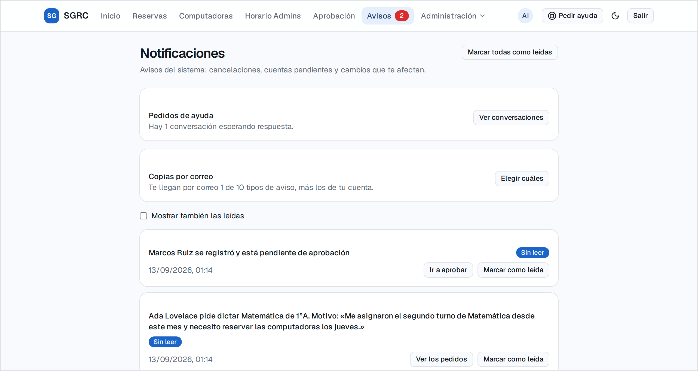
Los avisos de administración, más el buzón de pedidos de ayuda.
Si te llegan demasiados correos, en Copias por correo →
Elegir cuáles podés apagar los que no querés recibir
por mail. Todos siguen apareciendo acá adentro: lo que elegís es el canal,
no si te enterás.
Dos que conviene dejar encendidos
El de cuentas pendientes, porque su demora la sufre un docente que no puede
entrar, y el de licencias por vencer, porque avisa con tiempo de algo que
después no se resuelve en el momento.
19Tu perfil
Un Admin también tiene su cuenta, y se maneja igual que la de cualquier docente.
Se llega desde tu inicial o tu foto, arriba a la derecha, en
Mi cuenta → Mi perfil.
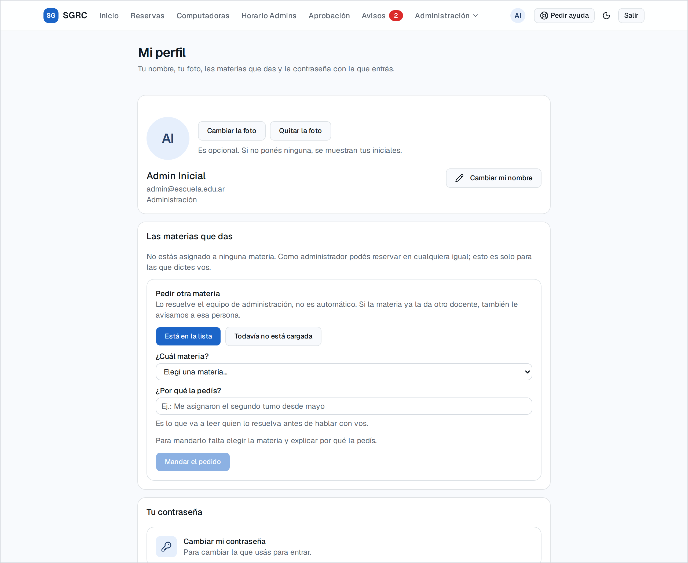
Tu foto, tu nombre, tus materias y tu contraseña, todo en un lugar.
Tu foto
Cambiar la foto y Quitar la
foto. Es opcional: si no ponés ninguna, se muestran tus iniciales. Sirve
para que un docente que no te conoce sepa a quién está buscando en el
laboratorio.
Tu nombre
Cambiar mi nombre corrige tu nombre y tu apellido.
Útil si quedaron mal escritos al crear la cuenta: es el nombre que ven los
docentes en Horario Admins y al pie de los avisos que mandás.
Las materias que das
Si además de administrar el laboratorio das clase, tus materias aparecen acá y
podés reservar como cualquier docente. Y si te falta alguna, la pedís desde
Pedir otra materia — sí, el pedido lo resuelve un Admin, que
probablemente seas vos mismo u otro compañero.
Tu contraseña
Cambiar mi contraseña. Te pide la actual y la nueva
dos veces.
Si te olvidaste la tuya
Otro Admin puede resetearte la contraseña desde Usuarios. Si sos el único
Admin, la salida es el correo de recuperación de la pantalla de entrada — otra
razón para que la escuela tenga más de un Admin.
20Una rutina que funciona
No hace falta mirar todo todos los días. Con esto alcanza.
Al abrir el laboratorio
Mirá tu pantalla de inicio: qué hay para entregar ahora y qué quedó
afuera de ayer. Si hay algo afuera que tenía que haber vuelto,
reclamalo.
Durante el día
Entregá y recibí en el momento. Es lo único que, si se hace tarde,
deja de servir.
Al cerrar
Revisá que no quede nada en «Afuera del laboratorio» que en realidad ya
volvió.
Una vez por día
Mirá Aprobación (cuentas nuevas) y Avisos (pedidos de ayuda sin
contestar).
Una vez por semana
Pasá por Licencias y por las incidencias de los equipos: qué
hay para renovar y qué máquina hay que mandar a arreglar.
Al empezar el año
Cerrá el ciclo anterior, creá el nuevo, cargá cursos y materias, y asigná los
docentes. Revisá también la jornada si cambiaron los turnos.
La regla de oro
El sistema es útil en la medida en que lo que está en pantalla coincide con lo que
pasa en el laboratorio. Todo lo demás —los avisos, los reportes, los reclamos
automáticos— sale de ahí.
21Si algo no sale como esperabas
Un docente dice que no puede reservar
Casi siempre es que no está asignado a ninguna materia del ciclo activo.
Revisalo en Académico, en la materia que corresponda. Lo segundo más
común: su cuenta quedó sin aprobar.
Un docente no recibe los correos
Que revise «correo no deseado». Después, que mire en Avisos → Copias por
correo si apagó esa familia de mensajes. Los avisos siempre están dentro del
sistema, aunque el correo no llegue.
Una computadora aparece disponible y en realidad está rota
La incidencia que cargó el docente no cambia el estado sola. Entrá a
Gestión del inventario y pasala a En mantenimiento.
Alguien devolvió una computadora y sigue figurando afuera
Falta marcarla como recibida en Entregas. Mientras figure afuera, el
sistema va a seguir reclamándola.
Necesito las máquinas para una evaluación y ya están reservadas
Usá Bloquear equipos con un motivo claro. Las reservas que se pisan se
cancelan y a cada docente le llega el aviso. Si podés, avisales antes por otro
lado: el sistema informa, no reemplaza el trato.
Me equivoqué al bloquear
Buscá el bloqueo en Reservas y tocá Levantar bloqueo. Ojo: las
reservas que se cancelaron no vuelven solas; hay que avisarle al docente que
puede reservar de nuevo.
No puedo crear el ciclo del año que viene
Solo puede haber un ciclo activo. Cerrá el actual con Cerrar el año y
después creá el nuevo.
Se rompió algo del sistema
Escribilo por Pedir ayuda, contando qué pantalla estabas usando y qué
pasó. El pedido guarda la pantalla y la versión, que es lo que necesita quien lo
va a mirar.
22Las palabras que vas a ver
Ciclo lectivo
El año escolar. Contiene los cursos, y solo puede haber uno activo. Al
cerrarlo, lo de ese año queda como histórico.
Curso y materia
1°A es un curso; Matemática de 1°A es una materia. Los docentes reservan para
una materia, no para un curso.
Carro y equipo
El carro es el mueble con las computadoras. Equipo es cualquier cosa que se
preste: una computadora, el proyector, un cargador.
Reserva
El derecho a usar unas computadoras en una franja horaria. No implica tenerlas
en la mano.
Entrega y devolución
Dónde está físicamente la máquina. Es lo que reemplaza al cuaderno: una
reserva puede existir sin que nadie haya retirado nada.
Bloqueo
Tomar equipos para otra cosa en una franja, cancelando las reservas que se
pisen. Siempre lleva un motivo, que es lo que leen los docentes.
Incidencia
El reporte de que una máquina no anda. Queda cargada en el equipo y no cambia
su estado por sí sola.
Licencia
El permiso de uso de un programa, con vencimiento. Cada máquina lleva su
propio contador.
Cuenta de un equipo
Con qué usuario se entra a esa máquina. No es la cuenta del sistema: son
dos cosas distintas y una persona usa las dos.
Jornada
Los días y horarios en que la escuela abre. Lo que queda afuera no se puede
reservar.
Si algo de esta guía no coincide con lo que ves
El sistema se sigue mejorando, así que puede que una pantalla haya cambiado.
Escribilo por Pedir ayuda: así se corrige tanto el sistema como esta guía.